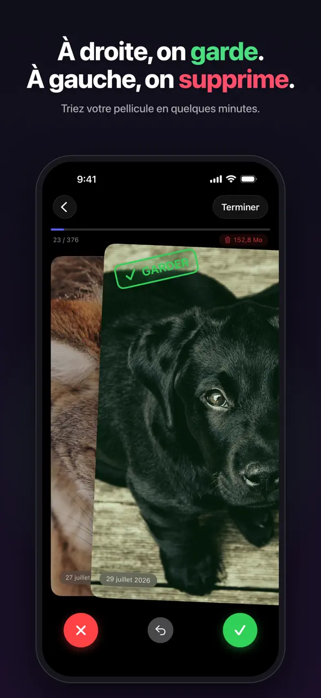
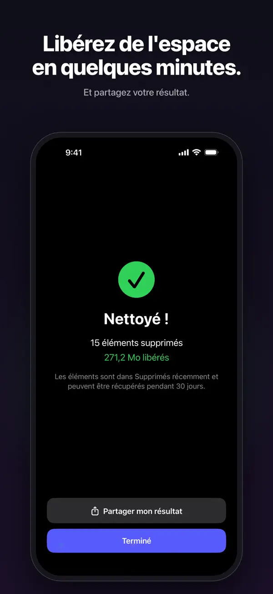

Libérez votre iPhone.
Swipez à gauche pour supprimer, à droite pour garder.
Swiped trie vos photos et vidéos sur iPhone et iPad. Des milliers de photos triées en quelques minutes, sans pub, sans abonnement et sans compte. Vos photos ne quittent jamais votre téléphone.
- Gratuit
- Sans pub
- Sans abonnement
- Sans compte
- Rien ne quitte votre iPhone




Comment ça marche
- 1Choisissez un album, ou toute la pellicule.
- 2À droite pour garder, à gauche pour supprimer. Annulez quand vous voulez.
- 3Revoyez votre sélection, confirmez, et récupérez de la place.
L'essentiel, rien de plus
Privé par principe
Tout se passe sur votre iPhone. Swiped ne collecte aucune donnée : « Aucune donnée collectée » sur l'App Store.
Suppression sans risque
Rien n'est supprimé avant que vous ayez revu votre sélection. Les photos supprimées restent 30 jours dans « Supprimés récemment ».
Trouver ce qui pèse
Filtrez par photos, vidéos ou captures d'écran, par date et par taille, pour trouver ce qui prend le plus de place.
Compteur d'espace
Voyez en direct combien de mégaoctets vous allez libérer, à chaque swipe.
Annulation illimitée
Vous avez changé d'avis ? Revenez en arrière d'autant de cartes que vous voulez.
Reprendre plus tard
Votre session est enregistrée à chaque swipe. Revenez demain et continuez.
Questions
Swiped est-il vraiment gratuit ?
Oui. Swiper, revoir et supprimer sont gratuits, sans pub, sans abonnement et sans compte. Des options pourront arriver plus tard en achat unique, jamais en abonnement.
Mes photos quittent-elles mon iPhone ?
Non. Swiped regarde vos photos uniquement sur votre iPhone. Il n'a pas de serveur et ne collecte aucune donnée.
Que deviennent les photos supprimées ?
Rien n'est supprimé avant votre confirmation. iOS les place ensuite dans « Supprimés récemment », où vous pouvez les récupérer pendant 30 jours.
Ça marche avec Photos iCloud ?
Oui. Les photos stockées dans iCloud apparaissent aussi, et supprimer une photo dans Swiped la supprime partout, comme dans l'app Photos.
Sur quels appareils ?
iPhone et iPad sous iOS 16 ou plus, en 9 langues.
Existe-t-il une version Android ?
Non. Swiped est fait uniquement pour iPhone et iPad. Les apps au nom proche sur Android ou ailleurs sur l'App Store n'ont aucun lien avec lui.
Swiped : Nettoyer ses photos
Télécharger dans l'App StoreiPhone · iPad · Gratuit